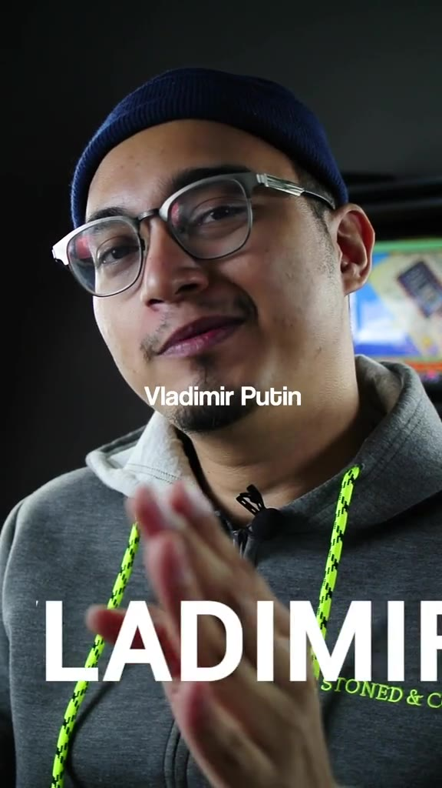

Producing and editing world news into fast, punchy explainers, the content engine that grew the account to half a million followers.

Akisyah's mission was to make world news feel urgent and shareable for a Malaysian audience. I ran the content engine behind it, scripting, editing and packaging dense geopolitics, from the Russia–Ukraine war to NATO and the global food supply, into short explainers built to hook in the first two seconds. This is the account I helped grow from 9,000 to 500,000 followers in seven months, with more than 20 million cumulative views.
Every clip took a heavy news story and made it feel like a conversation, a strong hook, a clear thread, and an edit paced for retention. Tap any video to watch; view counts are shown top-left.